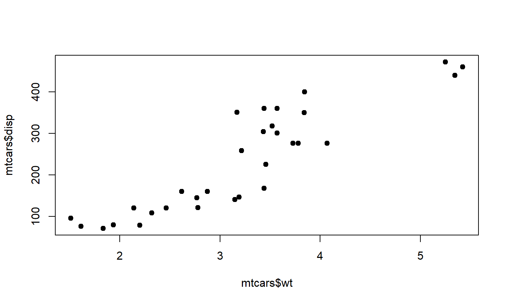

- Motivatie: schrijf je eigen functies
- Eenvoudige functies
- Batch analysis: gebruik functies om veel analyses tegelijk te doen
- Functies: extra tips & tricks
28 Mei 2020
Een script is toch ook prima?
Wat is er mis met Ctrl-C, Ctrl-V?
library(stringr)
melding <- "Hoofdstraat 12, 5524 AJ, Geeneveen"
pc <- str_extract(melding, "[0-9]{4}[[:space:]]+[a-zA-Z]{2}")
pc_ns <- str_replace(pc, "[[:space:]]", "")
out <- str_replace(melding, pc, pc_ns)
out[is.na(out)] <- melding[is.na(out)]
out
## [1] "Hoofdstraat 12, 5524AJ, Geeneveen"
# ./R/functies.R
remove_postcode_space <- function(x){
pc <- stringr::str_extract(x, "[0-9]{4}[[:space:]]+[a-zA-Z]{2}")
pc_ns <- stringr::str_replace(pc, "[[:space:]]", "")
out <- stringr::str_replace(x, pc, pc_ns)
out[is.na(out)] <- x[is.na(out)]
out
}
# main.R
remove_postcode_space("Hoofdstraat 12, 5524 AJ, Geeneveen")
## [1] "Hoofdstraat 12, 5524AJ, Geeneveen"
Dit kan, maar weet je zeker dat je nooit een typefout maakt?
mijndata$afstand_km <- mijndata$afstand_mijl / 0.6214
Beter om conversie functies te schrijven, met een duidelijke naam:
mijl_naar_kilometer <- function(x){
x / 0.6214
}
mijndata <- mutate(mijndata,
afstand_km = mijl_naar_kilometer(afstand_mijl))
Gebruik je bij het aanroepen van ingebouwde functies heel vaak dezelfde argumenten?
Schrijf een functie eromheen!
#Plot altijd met `pch = 19` (filled circles) in plaats van de default. plot(mtcars$wt, mtcars$disp, pch = 19)

In een functie,
# Zet een nieuwe default voor pch - stuur door naar plot().
plot_solid <- function(..., pch = 19){
plot(..., pch = pch)
}
Herhalen van analyses (of rapportage, grafieken, etc.) voor delen van de data.
Komt dit bekend voor?
data_a <- filter(mijndata, groep == "A") fit_a <- lm(y ~ x, data = data_a) summary(fit_a) data_b <- filter(mijndata, groep == "B") fit_b <- lm(y ~ x, data = data_b) summary(fit_b)
Een meer algemene oplossing:
model_fits <- split(mijndata, mijndata$groep) %>% lapply(., function(data)lm(y ~ x, data = data)) lapply(model_fits, summary)
Als je een verzameling ‘generieke’ functies hebt ontwikkeld, gebruik dan een R package.
Documentatie (?mijnfunctie) kan met gemak gescrheven worden.
Package kan door iedereen snel geinstalleerd worden.
Automatische tests.
Voorbeeld code bij elke functie.
Een R package is pas nuttig als de functies niet / weinig meer veranderen (ver ontwikkeld).
Alle projecten die jouw package gebruiken moeten in principe blijven werken als je updates maakt (backwards compatibility)
Deel een R package pas met anderen als je dit meestal kunt beloven.